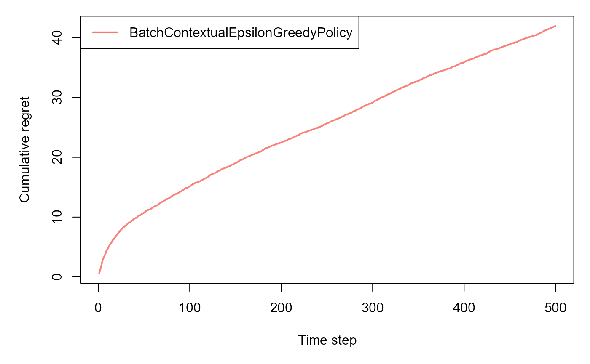
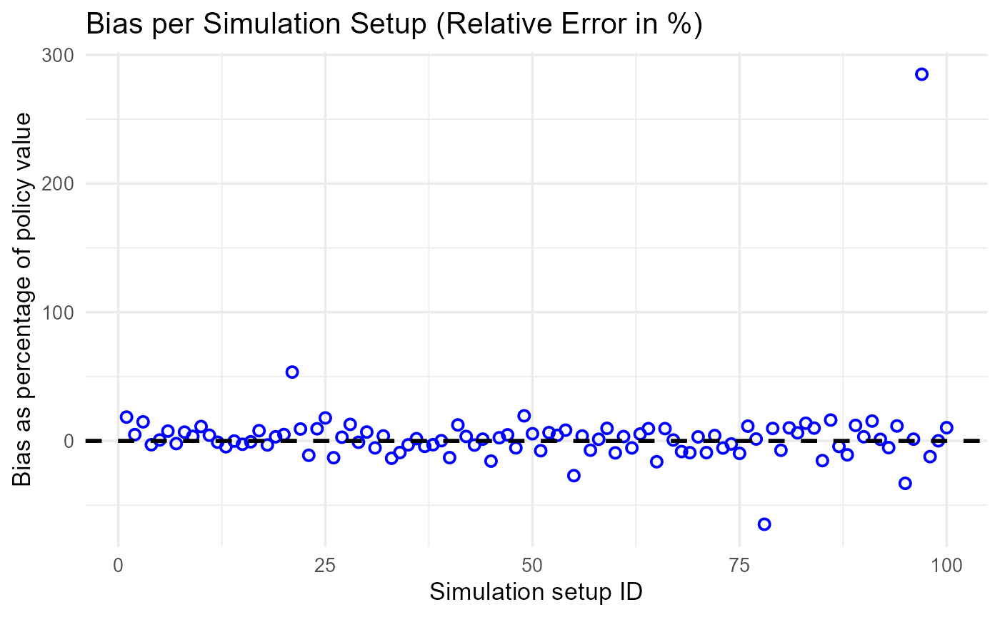

Introduction
The CRAM package provides a unified framework for:
- Learning and evaluating individualized treatment policies
- Batch-wise evaluation using machine learning models
- On-policy evaluation for contextual bandits
This vignette walks through the three core modules:
-
cram_policy()– for batch policy learning and evaluation
-
cram_ml()– for ML model evaluation with flexible loss functions
-
cram_bandit()– for on-policy evaluation in bandit settings
1. CRAM Policy Learning
set.seed(123)
n <- 1000
data <- generate_data(n)
X <- data$X
D <- data$D
Y <- data$Y
experiment_results <- cram_policy(
X, D, Y,
batch = 20,
model_type = "causal_forest",
alpha = 0.05
)
print(experiment_results)
#> $raw_results
#> Metric Value
#> 1 Delta Estimate 0.23208
#> 2 Delta Standard Error 0.05862
#> 3 Delta CI Lower 0.11718
#> 4 Delta CI Upper 0.34697
#> 5 Policy Value Estimate 0.21751
#> 6 Policy Value Standard Error 0.05237
#> 7 Policy Value CI Lower 0.11486
#> 8 Policy Value CI Upper 0.32016
#> 9 Proportion Treated 0.60500
#>
#> $interactive_table
#>
#> $final_policy_model
#> GRF forest object of type causal_forest
#> Number of trees: 100
#> Number of training samples: 1000
#> Variable importance:
#> 1 2 3
#> 0.437 0.350 0.213Custom Model
custom_fit <- function(X, Y, D, n_folds = 5) {
treated_indices <- which(D == 1)
control_indices <- which(D == 0)
X_treated <- X[treated_indices, ]
Y_treated <- Y[treated_indices]
X_control <- X[control_indices, ]
Y_control <- Y[control_indices]
model_treated <- cv.glmnet(as.matrix(X_treated), Y_treated, alpha = 0, nfolds = n_folds)
model_control <- cv.glmnet(as.matrix(X_control), Y_control, alpha = 0, nfolds = n_folds)
tau_control <- Y_treated - predict(model_control, as.matrix(X_treated), s = "lambda.min")
tau_treated <- predict(model_treated, as.matrix(X_control), s = "lambda.min") - Y_control
X_combined <- rbind(X_treated, X_control)
tau_combined <- c(tau_control, tau_treated)
weights <- c(rep(1, length(tau_control)), rep(1, length(tau_treated)))
final_model <- cv.glmnet(as.matrix(X_combined), tau_combined, alpha = 0, weights = weights, nfolds = n_folds)
return(final_model)
}
custom_predict <- function(model, X_new, D_new) {
cate <- predict(model, as.matrix(X_new), s = "lambda.min")
as.numeric(cate)
}
experiment_results <- cram_policy(
X, D, Y,
batch = 20,
custom_fit = custom_fit,
custom_predict = custom_predict,
alpha = 0.05
)
print(experiment_results)
#> $raw_results
#> Metric Value
#> 1 Delta Estimate 0.13367
#> 2 Delta Standard Error 0.10053
#> 3 Delta CI Lower -0.06338
#> 4 Delta CI Upper 0.33071
#> 5 Policy Value Estimate 0.11910
#> 6 Policy Value Standard Error 0.10105
#> 7 Policy Value CI Lower -0.07897
#> 8 Policy Value CI Upper 0.31716
#> 9 Proportion Treated 0.57600
#>
#> $interactive_table
#>
#> $final_policy_model
#> GRF forest object of type causal_forest
#> Number of trees: 100
#> Number of training samples: 1000
#> Variable importance:
#> 1 2 3
#> 0.446 0.327 0.2272. CRAM ML Evaluation
set.seed(42)
X_data <- data.frame(x1 = rnorm(100), x2 = rnorm(100), x3 = rnorm(100))
Y_data <- rnorm(100)
data_df <- data.frame(X_data, Y = Y_data)
caret_params_lm <- list(
method = "lm",
trControl = trainControl(method = "none")
)
result <- cram_ml(
data = data_df,
formula = Y ~ .,
batch = 5,
loss_name = "mse",
caret_params = caret_params_lm
)
print(result)
#> $raw_results
#> Metric Value
#> 1 Expected Loss Estimate 0.86429
#> 2 Expected Loss Standard Error 0.73665
#> 3 Expected Loss CI Lower -0.57952
#> 4 Expected Loss CI Upper 2.30809
#>
#> $interactive_table
#>
#> $final_ml_model
#> Linear Regression
#>
#> 100 samples
#> 3 predictor
#>
#> No pre-processing
#> Resampling: NoneCustom Model
custom_fit <- function(data) {
lm(Y ~ x1 + x2 + x3, data = data)
}
custom_predict <- function(model, data) {
predictors_only <- data[, setdiff(names(data), "Y"), drop = FALSE]
predict(model, newdata = predictors_only)
}
custom_loss <- function(predictions, data) {
actuals <- data$Y
mse_loss <- (predictions - actuals)^2
return(mse_loss)
}
result <- cram_ml(
data = data_df,
formula = Y ~ .,
batch = 5,
custom_fit = custom_fit,
custom_predict = custom_predict,
custom_loss = custom_loss
)
print(result)
#> $raw_results
#> Metric Value
#> 1 Expected Loss Estimate 0.59946
#> 2 Expected Loss Standard Error 0.39867
#> 3 Expected Loss CI Lower -0.18192
#> 4 Expected Loss CI Upper 1.38085
#>
#> $interactive_table
#>
#> $final_ml_model
#>
#> Call:
#> lm(formula = Y ~ x1 + x2 + x3, data = data)
#>
#> Coefficients:
#> (Intercept) x1 x2 x3
#> 0.031503 0.057754 0.008829 -0.0316113. CRAM Bandit Evaluation
set.seed(42)
T <- 100
K <- 4
pi <- array(runif(T * T * K, 0.1, 1), dim = c(T, T, K))
for (t in 1:T) {
for (j in 1:T) {
pi[j, t, ] <- pi[j, t, ] / sum(pi[j, t, ])
}
}
arm <- sample(1:K, T, replace = TRUE)
reward <- rnorm(T, mean = 1, sd = 0.5)
cram_results <- cram_bandit(pi, arm, reward)
print(cram_results)
#> $raw_results
#> Metric Value
#> 1 Policy Value Estimate 0.67621
#> 2 Policy Value Standard Error 0.04394
#> 3 Policy Value CI Lower 0.59008
#> 4 Policy Value CI Upper 0.76234
#>
#> $interactive_tableBandit Simulation
horizon <- 500L
simulations <- 100L
k <- 4
d <- 3
list_betas <- cramR:::get_betas(simulations, d, k)
bandit <- cramR:::ContextualLinearBandit$new(k = k, d = d, list_betas = list_betas, sigma = 0.3)
policy <- cramR:::BatchContextualEpsilonGreedyPolicy$new(epsilon = 0.1, batch_size = 5)
sim <- cram_bandit_sim(
horizon, simulations,
bandit, policy,
alpha = 0.05, do_parallel = FALSE
)
#> Simulation horizon: 500
#> Number of simulations: 101
#> Number of batches: 1
#> Starting main loop.
#> Finished main loop.
#> Completed simulation in 0:00:04.822
#> Computing statistics.
print(sim)
#> $estimates
#> sim estimate variance_est estimand prediction_error est_rel_error variance_prediction_error std_error ci_lower ci_upper
#> <int> <num> <num> <num> <num> <num> <num> <num> <num> <num>
#> 1: 1 0.5934946 0.0074853416 0.5008213 0.0926732980 0.1850426518 -0.15435762 0.08651787 0.42392267 0.7630665
#> 2: 2 0.5738572 0.0044886575 0.5472302 0.0266269364 0.0486576503 -0.49290236 0.06699744 0.44254457 0.7051697
#> 3: 3 0.3082747 0.0059714142 0.2685309 0.0397438543 0.1480047945 -0.32539072 0.07727493 0.15681864 0.4597308
#> 4: 4 0.4875583 0.0017858937 0.5025160 -0.0149577243 -0.0297656692 -0.79824202 0.04225984 0.40473050 0.5703860
#> 5: 5 0.6279068 0.0028121753 0.6234795 0.0044272785 0.0071009204 -0.68229979 0.05302995 0.52397002 0.7318436
#> 6: 6 0.6756592 0.0017886154 0.6278958 0.0477634808 0.0760691251 -0.79793454 0.04229202 0.59276839 0.7585501
#> 7: 7 0.5730742 0.0017161244 0.5853930 -0.0123188150 -0.0210436666 -0.80612408 0.04142613 0.49188046 0.6542679
#> 8: 8 0.5227079 0.0012413336 0.4893036 0.0334042998 0.0682690620 -0.85976267 0.03523256 0.45365337 0.5917625
#> 9: 9 0.5727205 0.0017862708 0.5531983 0.0195222438 0.0352897780 -0.79819942 0.04226430 0.48988400 0.6555570
#> 10: 10 0.5008949 0.0019120477 0.4505540 0.0503408845 0.1117310742 -0.78399001 0.04372697 0.41519162 0.5865982
#> 11: 11 0.5896355 0.0015834232 0.5646470 0.0249885711 0.0442552113 -0.82111574 0.03979225 0.51164416 0.6676269
#> 12: 12 0.6661715 0.0085479224 0.6730501 -0.0068785859 -0.0102200203 -0.03431456 0.09245497 0.48496311 0.8473800
#> 13: 13 0.4155410 0.0021417559 0.4353688 -0.0198278063 -0.0455425472 -0.75803916 0.04627911 0.32483566 0.5062464
#> 14: 14 0.5874491 0.0019488865 0.5881986 -0.0007495008 -0.0012742308 -0.77982821 0.04414620 0.50092415 0.6739741
#> 15: 15 0.5624189 0.0034441171 0.5775935 -0.0151745609 -0.0262720420 -0.61090735 0.05868660 0.44739532 0.6774426
#> 16: 16 0.3854339 0.0046490697 0.3881738 -0.0027398785 -0.0070583804 -0.47478010 0.06818409 0.25179558 0.5190723
#> 17: 17 0.5114540 0.0015462162 0.4738467 0.0376073533 0.0793660792 -0.82531914 0.03932196 0.43438442 0.5885237
#> 18: 18 0.5902585 0.0015424719 0.6093514 -0.0190929303 -0.0313332019 -0.82574215 0.03927432 0.51328222 0.6672347
#> 19: 19 0.7059122 0.0011704551 0.6840281 0.0218841422 0.0319930471 -0.86777004 0.03421191 0.63885809 0.7729663
#> 20: 20 0.6300472 0.0016527784 0.6004103 0.0296369256 0.0493611241 -0.81328047 0.04065438 0.55036608 0.7097283
#> 21: 21 0.8787457 0.0604291267 0.5725605 0.3061852009 0.5347648014 5.82686688 0.24582336 0.39694076 1.3605506
#> 22: 22 0.4966222 0.0015875680 0.4546451 0.0419771798 0.0923295626 -0.82064749 0.03984430 0.41852886 0.5747156
#> 23: 23 0.5641831 0.0134459969 0.6353099 -0.0711268351 -0.1119561254 0.51903620 0.11595688 0.33691177 0.7914544
#> 24: 24 0.7453828 0.0018363610 0.6813180 0.0640648238 0.0940307243 -0.79254057 0.04285278 0.66139290 0.8293727
#> 25: 25 0.5691530 0.0025291593 0.4830130 0.0861399897 0.1783388641 -0.71427299 0.05029075 0.47058494 0.6677210
#> 26: 26 0.3149706 0.0095690247 0.3623225 -0.0473518939 -0.1306899103 0.08104256 0.09782139 0.12324419 0.5066970
#> 27: 27 0.7145588 0.0021662946 0.6946689 0.0198899831 0.0286323228 -0.75526695 0.04654347 0.62333532 0.8057824
#> 28: 28 0.5874197 0.0011613517 0.5205859 0.0668337468 0.1283817829 -0.86879847 0.03407861 0.52062680 0.6542125
#> 29: 29 0.5283493 0.0011187357 0.5341385 -0.0057892396 -0.0108384617 -0.87361294 0.03344751 0.46279335 0.5939052
#> 30: 30 0.5795086 0.0027685835 0.5422025 0.0373060733 0.0688046861 -0.68722449 0.05261733 0.47638051 0.6826367
#> 31: 31 0.4414717 0.0015268933 0.4669405 -0.0254687762 -0.0545439480 -0.82750211 0.03907548 0.36488515 0.5180582
#> 32: 32 0.4766418 0.0021112230 0.4590270 0.0176147187 0.0383740323 -0.76148856 0.04594805 0.38658525 0.5666983
#> 33: 33 0.4410774 0.0036700149 0.5098778 -0.0688004595 -0.1349351833 -0.58538697 0.06058065 0.32234149 0.5598133
#> 34: 34 0.6196911 0.0121299017 0.6813577 -0.0616665915 -0.0905054657 0.37035282 0.11013583 0.40382879 0.8355533
#> 35: 35 0.5798466 0.0058569303 0.5980620 -0.0182154715 -0.0304574950 -0.33832432 0.07653058 0.42984938 0.7298438
#> 36: 36 0.6330162 0.0013438280 0.6223294 0.0106868119 0.0171722749 -0.84818356 0.03665826 0.56116736 0.7048651
#> 37: 37 0.4826806 0.0096985759 0.5041018 -0.0214212021 -0.0424937988 0.09567836 0.09848135 0.28966074 0.6757005
#> 38: 38 0.6297604 0.0013349188 0.6490027 -0.0192423404 -0.0296490898 -0.84919006 0.03653654 0.55815009 0.7013707
#> 39: 39 0.6207595 0.0020397236 0.6197995 0.0009600030 0.0015488928 -0.76956607 0.04516330 0.53224108 0.7092780
#> 40: 40 0.6472277 0.0068671224 0.7440085 -0.0967808618 -0.1300803149 -0.22419977 0.08286810 0.48480916 0.8096461
#> 41: 41 0.5725539 0.0023908102 0.5093588 0.0631951343 0.1240680174 -0.72990272 0.04889591 0.47671969 0.6683881
#> 42: 42 0.6392007 0.0013436991 0.6179314 0.0212693164 0.0344201885 -0.84819812 0.03665650 0.56735532 0.7110462
#> 43: 43 0.6178110 0.0069727988 0.6384992 -0.0206882362 -0.0324013479 -0.21226118 0.08350329 0.45414758 0.7814744
#> 44: 44 0.6078855 0.0009241534 0.5997307 0.0081548794 0.0135975695 -0.89559550 0.03039989 0.54830285 0.6674682
#> 45: 45 0.5727816 0.0102875044 0.6796075 -0.1068258610 -0.1571875865 0.16221145 0.10142734 0.37398770 0.7715756
#> 46: 46 0.4926007 0.0028690838 0.4808381 0.0117625096 0.0244625136 -0.67587065 0.05356383 0.38761748 0.5975838
#> 47: 47 0.5483488 0.0051467875 0.5236531 0.0246956742 0.0471603693 -0.41855137 0.07174111 0.40773879 0.6889588
#> 48: 48 0.6034589 0.0048266330 0.6381896 -0.0347307751 -0.0544207750 -0.45472022 0.06947397 0.46729238 0.7396254
#> 49: 49 0.5198579 0.0029179008 0.4351313 0.0847266509 0.1947151584 -0.67035565 0.05401760 0.41398536 0.6257304
#> 50: 50 0.7275270 0.0018915740 0.6891961 0.0383309062 0.0556168366 -0.78630299 0.04349223 0.64228379 0.8127702
#> 51: 51 0.4740533 0.0008184172 0.5132637 -0.0392103862 -0.0763942337 -0.90754086 0.02860799 0.41798267 0.5301239
#> 52: 52 0.5537644 0.0009899394 0.5203003 0.0334640587 0.0643168120 -0.88816346 0.03146330 0.49209745 0.6154313
#> 53: 53 0.7027147 0.0009531000 0.6735536 0.0291610542 0.0432943338 -0.89232532 0.03087232 0.64220602 0.7632233
#> 54: 54 0.6255499 0.0034253397 0.5774410 0.0481089078 0.0833139833 -0.61302869 0.05852640 0.51084024 0.7402595
#> 55: 55 0.3611252 0.0249086524 0.4948395 -0.1337143391 -0.2702175925 1.81400813 0.15782475 0.05179433 0.6704560
#> 56: 56 0.4769535 0.0009727451 0.4594448 0.0175086534 0.0381082811 -0.89010596 0.03118886 0.41582446 0.5380825
#> 57: 57 0.4879967 0.0033098639 0.5259849 -0.0379881886 -0.0722229703 -0.62607435 0.05753142 0.37523716 0.6007562
#> 58: 58 0.6215578 0.0021908236 0.6136904 0.0078673538 0.0128197431 -0.75249583 0.04680623 0.52981926 0.7132963
#> 59: 59 0.5461506 0.0015949373 0.4976941 0.0484565296 0.0973620737 -0.81981496 0.03993667 0.46787620 0.6244251
#> 60: 60 0.4702621 0.0058933050 0.5186381 -0.0483760528 -0.0932751608 -0.33421495 0.07676786 0.31979980 0.6207243
#> 61: 61 0.7637313 0.0009123368 0.7387288 0.0250024249 0.0338451998 -0.89693046 0.03020491 0.70453071 0.8229318
#> 62: 62 0.4716809 0.0030464720 0.4990114 -0.0273304964 -0.0547692834 -0.65583056 0.05519486 0.36350097 0.5798608
#> 63: 63 0.6490774 0.0007906656 0.6161465 0.0329308651 0.0534464831 -0.91067604 0.02811878 0.59396560 0.7041892
#> 64: 64 0.4493761 0.0031519295 0.4102655 0.0391105578 0.0953298721 -0.64391670 0.05614205 0.33933967 0.5594125
#> 65: 65 0.5955382 0.0129155241 0.7107474 -0.1152091858 -0.1620958344 0.45910703 0.11364649 0.37279515 0.8182812
#> 66: 66 0.5748850 0.0064759657 0.5248484 0.0500366203 0.0953353741 -0.26838997 0.08047338 0.41716010 0.7326100
#> 67: 67 0.5524612 0.0033530859 0.5486157 0.0038455232 0.0070095025 -0.62119143 0.05790584 0.43896787 0.6659546
#> 68: 68 0.5195672 0.0020548354 0.5665335 -0.0469663296 -0.0829012357 -0.76785884 0.04533029 0.43072146 0.6084129
#> 69: 69 0.4304486 0.0028164783 0.4738291 -0.0433805464 -0.0915531414 -0.68181367 0.05307050 0.32643232 0.5344649
#> 70: 70 0.5981785 0.0021411053 0.5800398 0.0181387398 0.0312715441 -0.75811266 0.04627208 0.50748692 0.6888701
#> 71: 71 0.3344481 0.0018145011 0.3679618 -0.0335137331 -0.0910793775 -0.79501016 0.04259696 0.25095957 0.4179366
#> 72: 72 0.4888112 0.0021549633 0.4693497 0.0194614845 0.0414647849 -0.75654708 0.04642158 0.39782656 0.5797958
#> 73: 73 0.5788351 0.0021856980 0.6128439 -0.0340087939 -0.0554934056 -0.75307488 0.04675145 0.48720393 0.6704662
#> 74: 74 0.5064910 0.0024730697 0.5187648 -0.0122737913 -0.0236596439 -0.72060960 0.04972997 0.40902210 0.6039600
#> 75: 75 0.5227681 0.0120303288 0.5790717 -0.0563035712 -0.0972307426 0.35910376 0.10968286 0.30779368 0.7377426
#> 76: 76 0.6457163 0.0094378094 0.5794493 0.0662670224 0.1143620706 0.06621876 0.09714839 0.45530898 0.8361237
#> 77: 77 0.6248139 0.0021666692 0.6158526 0.0089612869 0.0145510257 -0.75522463 0.04654749 0.53358246 0.7160453
#> 78: 78 0.1949192 0.1744233778 0.5537660 -0.3588467270 -0.6480115225 18.70515288 0.41764025 -0.62364061 1.0134791
#> 79: 79 0.7132369 0.0024377406 0.6504199 0.0628170200 0.0965791855 -0.72460084 0.04937348 0.61646663 0.8100071
#> 80: 80 0.5877896 0.0018526888 0.6340194 -0.0462297809 -0.0729154044 -0.79069596 0.04304287 0.50342714 0.6721521
#> 81: 81 0.5888747 0.0020205773 0.5348018 0.0540728760 0.1011082563 -0.77172908 0.04495083 0.50077265 0.6769767
#> 82: 82 0.7170877 0.0030761433 0.6748867 0.0422009724 0.0625304557 -0.65247850 0.05546299 0.60838220 0.8257931
#> 83: 83 0.6262660 0.0015754096 0.5506734 0.0755926267 0.1372730616 -0.82202106 0.03969143 0.54847228 0.7040598
#> 84: 84 0.5817337 0.0055618524 0.5291393 0.0525944086 0.0993961455 -0.37166019 0.07457783 0.43556387 0.7279036
#> 85: 85 0.3372241 0.0018526477 0.3982926 -0.0610684645 -0.1533256314 -0.79070061 0.04304239 0.25286259 0.4215857
#> 86: 86 0.6954308 0.0263460617 0.5984294 0.0970014525 0.1620934011 1.97639674 0.16231470 0.37729986 1.0135618
#> 87: 87 0.4766444 0.0065789900 0.4980668 -0.0214224033 -0.0430111074 -0.25675098 0.08111097 0.31766978 0.6356190
#> 88: 88 0.2370559 0.0092909719 0.2658272 -0.0287712412 -0.1082328789 0.04963006 0.09638969 0.04813562 0.4259763
#> 89: 89 0.6317936 0.0008887415 0.5639344 0.0678591133 0.1203315633 -0.89959610 0.02981177 0.57336357 0.6902235
#> 90: 90 0.6741108 0.0027238213 0.6531500 0.0209608302 0.0320919084 -0.69228141 0.05219024 0.57181984 0.7764018
#> 91: 91 0.5722533 0.0013877831 0.4958937 0.0763595741 0.1539837506 -0.84321782 0.03725296 0.49923883 0.6452678
#> 92: 92 0.6236436 0.0014768050 0.6160438 0.0075998926 0.0123366116 -0.83316073 0.03842922 0.54832376 0.6989635
#> 93: 93 0.5109169 0.0010766705 0.5391237 -0.0282067600 -0.0523196456 -0.87836517 0.03281266 0.44660529 0.5752286
#> 94: 94 0.6452847 0.0046669813 0.5782210 0.0670637244 0.1159828564 -0.47275657 0.06831531 0.51138919 0.7791803
#> 95: 95 0.3110406 0.0701107106 0.4641988 -0.1531582716 -0.3299410851 6.92062559 0.26478427 -0.20792706 0.8300082
#> 96: 96 0.4869943 0.0027929223 0.4804765 0.0065177422 0.0135651629 -0.68447486 0.05284811 0.38341387 0.5905746
#> 97: 97 0.8769112 0.4249120933 0.2277933 0.6491178219 2.8495909229 47.00364416 0.65185282 -0.40069688 2.1545192
#> 98: 98 0.4717461 0.0091029030 0.5374690 -0.0657228675 -0.1222821591 0.02838333 0.09540913 0.28474765 0.6587446
#> 99: 99 0.6002216 0.0014933388 0.5997550 0.0004666716 0.0007781039 -0.83129286 0.03864374 0.52448129 0.6759620
#> 100: 100 0.7499394 0.0018908801 0.6801481 0.0697912308 0.1026118113 -0.78638138 0.04348425 0.66471179 0.8351669
#> sim estimate variance_est estimand prediction_error est_rel_error variance_prediction_error std_error ci_lower ci_upper
#>
#> $summary_table
#> Metric Value
#> 1 Empirical Bias on Policy Value 0.01049
#> 2 Average relative error on Policy Value 0.03564
#> 3 RMSE of errors on Policy Value 0.31144
#> 4 Empirical Coverage of Confidence Intervals 0.97000
#>
#> $interactive_table
#>
#> $bias_plot